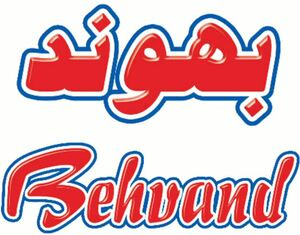

Trade Mark Journal No.2025/034 22 August 2025
WO0000001868944 (30)
Office of origin: Iran (Islamic Republic of)
Date of International Registration:25 June 2025
Date of designation in the UK:
25 June 2025

The mark contains the colours Red, white and navy blue.
- Class 30
- Almond confectionery; biscuits; bread, pastries and confectionery; petit-beurre biscuits; petits fours [cakes]; honey; fruit jellies [confectionery]; confectionery; coconut cream-filled biscuits; almond biscuits; malt biscuits; candies; condiments; crackers; salty biscuits; cakes; cereal bars; granola bars; chewing gum; chocolate; chocolate decorations for Christmas trees; cocoa; coffee; seasonings; rice; biscuits, filled; butter biscuits; cheese biscuits; fruit biscuits; ginger biscuits; oat biscuits; saffron [seasoning]; sauce mixes; chilli sauce; edible sauce; sugar; sugar biscuits; rock sugar; sugar confectionery; tarts; tea; vinegar; waffles; cocoa products; chocolate-based spreads; macarons; fondant; bread sticks; gum sweets; bread pudding; cookies; chocolate syrups; fruit sweets; fruit confectionery; cookies, filled; filled waffles; sweet fillings; wafer biscuits; biscuits filled with vanilla cream; herbal tea; dates sugar; hot chocolate mix; chocolate creams; chocolate-covered nuts; chocolate candies; lollipops [confectionery]; confectionery bars; baklava; ice pops; nougat; coffee mixes; instant coffee; cotton candy; halva; chocolate-based snacks; crisp bread snacks; bread crumbs; wheat flakes; processed wheat; flour confectionery; donuts; cocoa powder; croissants; chocolate mousse; cappuccino; chocolate biscuits; flour; bread.
Negin Asal Harand Co.
Representative: Mohammadali Mirzababaei Pellekan Intellectual Property and Technology Institute, No.94, Baharestan 8th Ave, Sajjad Blvd, 9187863914 Mashhad, IRAN (ISLAMIC REPUBLIC OF)